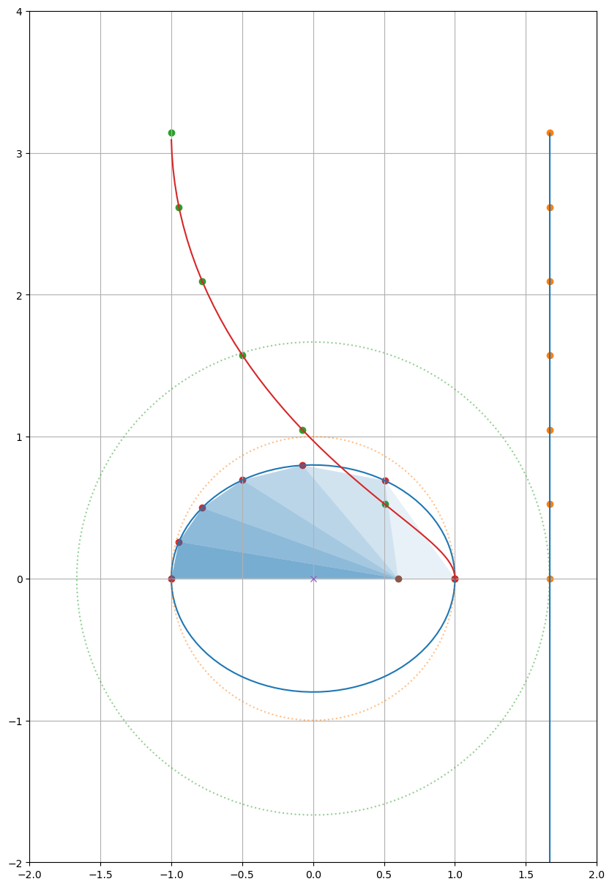

ケプラーの第二法則#
(1609) A line segment joining a planet and the Sun sweeps out equal areas during equal intervals of time.

\[
M = E - e \sin E
\]
“I am sufficiently satisfied that it (Kepler’s equation) cannot be solved a priori, on account of the different nature of the arc and the sine. But if I am mistaken, and any one shall point out the way to me, he will be in my eyes the great Apollonius.” by Johannes Kepler
「私は、円弧と正弦の性質の違いから、この方程式が原理的に解けないことに十分満足している。しかし、もし私が間違っていて、誰か私に道を指し示す者がいれば、その人は私の目には偉大なアポロニウスと映るだろう。」
\[
M = E - e \sin E
\]
ベッセル関数を用いて級数展開することができる:
\[E = M + \sum_{k=1}^{\infty} \frac{2}{k} J_{k} (k e) \sin(k M) \]
\[\begin{split}
\begin{eqnarray}
J_{\alpha} (x) &=& \sum_{m=0}^{\infty} \frac{(-1)^m}{m! \, \Gamma(m+\alpha+1)} \left(\frac{x}{2}\right)^{2m+\alpha} \\
&=&\sum_{m=0}^{\infty} \frac{(-1)^m}{m! \,(m+\alpha)!} \left(\frac{x}{2}\right)^{2m+\alpha}
\end{eqnarray}
\end{split}\]
\[\Gamma(n) = (n-1)!\]
ニュートンによるケプラー方程式の証明#
from scipy.special import *
import numpy as np
import matplotlib.pyplot as plt
import matplotlib.collections as mc
import matplotlib.patches as mp
theta = np.linspace(0, 2*np.pi, 100)
epsilon = 0.6
#epsilon = 0.9673 # 1P/Halley
#epsilon = 0.0935 # mars
#epsilon = 0.0167 # earth
a=1
b= np.sqrt(a**2-epsilon**2)
print(a, b, a*epsilon)
1 0.8 0.6
ax = plt.figure(figsize=(10,30)).add_subplot()
ax.set_xlim([-2,2])
ax.set_ylim([-2,4])
ax.set_aspect('equal')
X0 = np.cos(theta)
Y0 = b * np.sin(theta)
ax.plot(X0,Y0)
X1 = np.cos(theta)
Y1 = np.sin(theta)
ax.plot(X1,Y1, ':', alpha=.5)
X2 = (a/epsilon) * np.cos(theta)
Y2 = (a/epsilon) * np.sin(theta)
ax.plot(X2,Y2, ':', alpha=.5)
Y3 = a/epsilon*theta - a*np.sin(theta)
# Newton's cycloid
#ax.plot(np.cos(theta[:50]), Y3[:50])
ax.plot(np.cos(theta[:50]), epsilon*Y3[:50])
l = mc.LineCollection([[(a/epsilon,-2),(a/epsilon,np.pi)]])
ax.add_collection(l)
ax.plot(0,0,'x')
ax.plot(epsilon,0,'o')
ax.scatter(*zip(*[(a,0),(-a,0)]), alpha=.5)
phi = np.linspace(0, np.pi, 7)
X4=[t + np.sum([2/n * jv(n, epsilon*n) * np.sin(n*t) for n in range(1,40)]) for t in phi]
ax.scatter(np.full_like(phi, a/epsilon), phi)
ax.scatter(a*np.cos(X4), phi)
ax.scatter(a*np.cos(X4), b*np.sin(X4))
XY = np.array((a*np.cos(X4), b*np.sin(X4))).T
for i in range(XY.shape[0]-1):
p=np.concatenate((np.array([[epsilon,0]]), XY[i:i+2]),axis=0)
ax.add_patch(mp.Polygon(p, alpha=(i+1)/10))
plt.grid()
plt.show()

公転角速度の変化#
XY = np.array((a*np.cos(X4), b*np.sin(X4))).T
Y9=np.arctan2(*(XY-np.array((epsilon,0))).T[::-1])*180/np.pi
Y8=np.diff(Y9)
print(Y8)
plt.scatter(np.linspace(0,1,len(Y8)),Y8)
plt.ylim([0,100])
plt.grid()
plt.show()
[97.83899242 32.38159667 17.46700796 12.46664204 10.34259764 9.50316326]
火星の公転角速度の変化#
XY = np.array((a*np.cos(X4), b*np.sin(X4))).T
Y9=np.arctan2(*(XY-np.array((epsilon,0))).T[::-1])*180/np.pi
Y8=np.diff(Y9)
print(Y8)
plt.scatter(np.linspace(0,1,len(Y8)),Y8)
plt.ylim([0,60])
plt.grid()
plt.show()
[35.94653859 33.85827002 30.84781135 28.07926617 26.12558095 25.14253292]
地球の公転角速度の変化#
XY = np.array((a*np.cos(X4), b*np.sin(X4))).T
Y9=np.arctan2(*(XY-np.array((epsilon,0))).T[::-1])*180/np.pi
Y8=np.diff(Y9)
print(Y8)
plt.scatter(np.linspace(0,1,len(Y8)),Y8)
plt.ylim([0,60])
plt.grid()
plt.show()
[30.97439563 30.70013329 30.23879445 29.72662134 29.29985015 29.06020514]
参考) ケプラー方程式を解析的に解く#
from scipy.special import *
import numpy as np
from sympy import *
import matplotlib.pyplot as plt
t=np.pi/3
t + sum([2/n * jv(n, .6*n) * np.sin(n*t) for n in range(1,80)])
1.6455231032667712
X=np.linspace(0, 2*np.pi, 100)
Y=[t + sum([2/n * jv(n, .9*n) * np.sin(n*t) for n in range(1,40)]) for t in X]
plt.plot(X,Y)
[<matplotlib.lines.Line2D at 0x11c159100>]
代数的には解けない#
from scipy.optimize import fsolve
fsolve(lambda x: x - .9 * sin[x] - np.pi/3, [-2*np.pi, 2*np.pi])
---------------------------------------------------------------------------
NameError Traceback (most recent call last)
/tmp/ipykernel_326/2620952396.py in <cell line: 1>()
----> 1 fsolve(lambda x: x - .9 * sin[x] - np.pi/3, [-2*np.pi, 2*np.pi])
/opt/conda/lib/python3.10/site-packages/scipy/optimize/_minpack_py.py in fsolve(func, x0, args, fprime, full_output, col_deriv, xtol, maxfev, band, epsfcn, factor, diag)
161 'diag': diag}
162
--> 163 res = _root_hybr(func, x0, args, jac=fprime, **options)
164 if full_output:
165 x = res['x']
/opt/conda/lib/python3.10/site-packages/scipy/optimize/_minpack_py.py in _root_hybr(func, x0, args, jac, col_deriv, xtol, maxfev, band, eps, factor, diag, **unknown_options)
227 if not isinstance(args, tuple):
228 args = (args,)
--> 229 shape, dtype = _check_func('fsolve', 'func', func, x0, args, n, (n,))
230 if epsfcn is None:
231 epsfcn = finfo(dtype).eps
/opt/conda/lib/python3.10/site-packages/scipy/optimize/_minpack_py.py in _check_func(checker, argname, thefunc, x0, args, numinputs, output_shape)
24 def _check_func(checker, argname, thefunc, x0, args, numinputs,
25 output_shape=None):
---> 26 res = atleast_1d(thefunc(*((x0[:numinputs],) + args)))
27 if (output_shape is not None) and (shape(res) != output_shape):
28 if (output_shape[0] != 1):
/tmp/ipykernel_326/2620952396.py in <lambda>(x)
----> 1 fsolve(lambda x: x - .9 * sin[x] - np.pi/3, [-2*np.pi, 2*np.pi])
NameError: name 'sin' is not defined